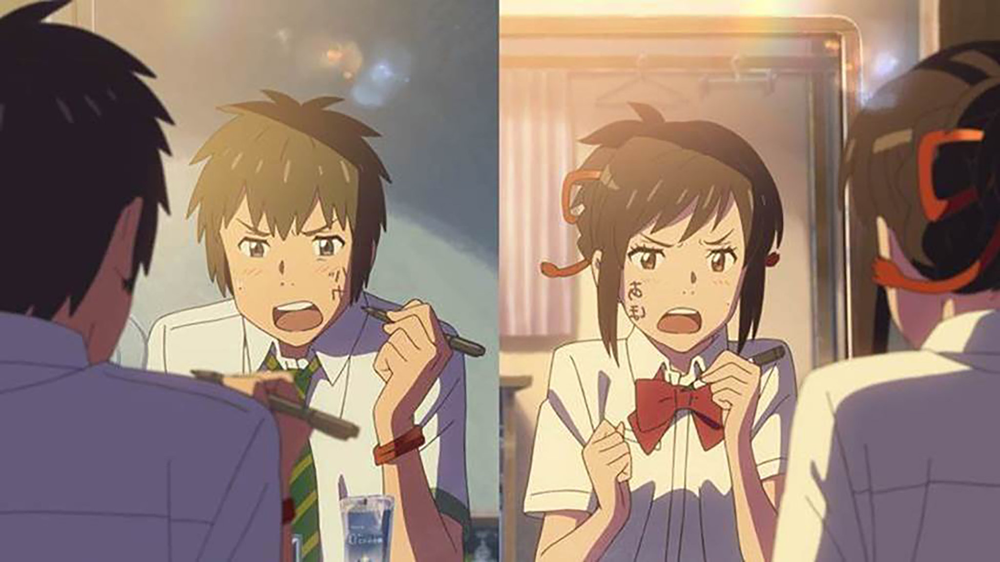
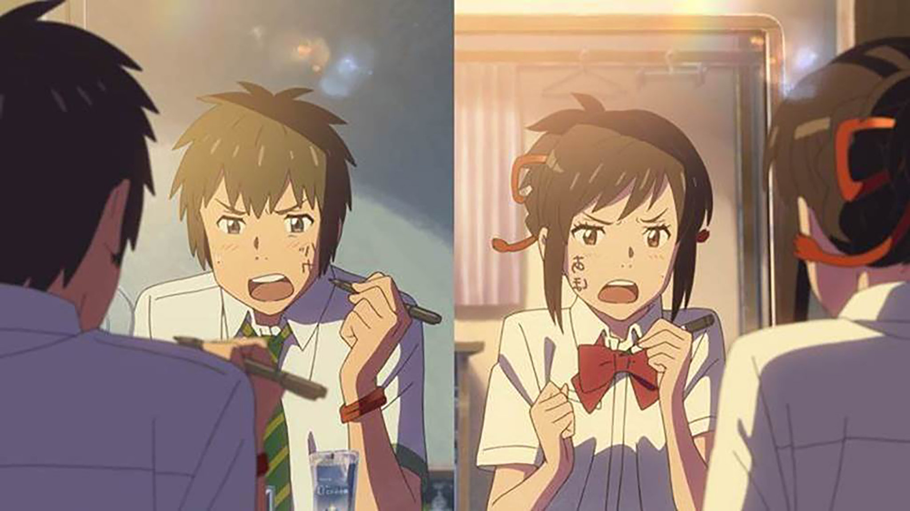

Home
TOP 10 Anime
TOP 10 Mangs


© By Shuniaieva Marianna.Published
Two tickets to the highest-grossing anime movie of all time, please. Throughout the years, Japanese animation company Studio Ghibli has dominated the anime box office with feature films such as Princess Mononoke, Ponyo, Howl’s Moving Castle, and Spirited Away. These four movies are among the 10 highest-grossing anime movies worldwide and have grossed millions of dollars since their release. New contenders in the anime blockbuster scene, Makoto Shinkai’s works Your Name, Weathering With You, and Suzume no Tojimari are also on top of the charts. Films from shonen franchises like Jujutsu Kaisen, Demon Slayer, and One Piece are on the rise, all of which broke records during their respective premieres. From heartwarming tales of love and friendship to epic clashes between good and evil, each one is a story written to inspire. But you don’t have to be a magic-wielding badass to make a difference — even everyday heroes can rise up with small acts and change the lives of those they care about for the better.
Choo choo! All aboard the Mugen money train! Ufotable’s Demon Slayer Mugen Train is the highest-grossing anime movie of all time. The film follows the manga’s Mugen Train arc, featuring the Kamado siblings, their friends, and the Flame Hashira, Kyokuro Rengoku. The group is on a hunt to find a dangerous demon aboard the Mugen Train, while defending the 200 passengers onboard. Despite being released at the height of the COVID-19 pandemic in 2020, the movie broke records and became the highest-grossing Japanese film of all time with more than US$506 million in earnings. In fact, it beat Spirited Away’s 19-year record after grossing US$223 million just over two months after its release. The film received high praise for its gorgeous visuals and top-tier animation, particularly its enthralling fight scenes. Anime fans can watch the full Demon Slayer Mugen Train movie on Netflix.
Are you really a true anime fan if you have never watched a Studio Ghibli film, especially the storied animation studio’s highest-grossing movie of all time? Hayao Miyazaki’s Spirited Away is considered by many fans a classic anime movie. It follows the story of Chihiro Ogino, a young girl who moves into a new neighborhood and accidentally stumbles upon the spirit world. Later on, she meets a boy named Haku who helps her find a way out of the spiritual dimension. The movie has received multiple local and international awards, including the 30th Annie Awards for Best Animated Feature and the 8th Critics’ Choice Awards for Best Animated Feature.
 

Perhaps the most-loved Makoto Shinkai film of our generation, Your Name centers on the mundane lives of a high school boy living in Tokyo named Taki Tachibana and a high school girl in the countryside named Mitsuha Miyamizu. One fateful day, the two inexplicably begin to switch bodies. During its first few weeks at the Japanese box office, Your Name held the top spot for several consecutive weekends. It grossed US$160 million in 2016 according to Oricon News, besting international titles in the country such as Star Wars: The Force Awakens, Shin Godzilla, Zootopia, and Finding Dory.

Officially the highest-grossing movie in One Piece history, One Piece Film Red introduces a new and mysterious character in the franchise named Uta. She is known as “the world’s greatest diva” and is the daughter of Shanks, one of the Four Emperors and Luffy’s childhood hero. The movie broke records and greatly surpassed Jujutsu Kaisen 0’s earnings within a short period of time.

Another Studio Ghibli film, Howl’s Moving Castle tells the tale of Sophie Hatter, a young hat maker, and Howl Pendragon, a wizard who owns the titular moving castle. When Sophie encounters the Witch of the Waste, who transforms her into a 90-year-old woman, she sets off on a quest to break the curse. Howl’s Moving Castle first premiered during the 61st Venice Film Festival in 2004, where it won the Osella Awards for Technical Achievement.
Hayao Miyazaki’s works are simply blockbusters, and Ponyo is no exception. It revolves around the adventures of a goldfish named Ponyo, who escapes from the ocean and meets a young boy named Sousuke. The two embark on a magical journey in a quest to transform the fish into a human girl. Miyazaki’s wholesome picture made an impressive US$3,585,852 during its opening weekend in the United States and Canada in 2008.

The Jujutsu Kaisen anime series welcomes you to a world of cursed energy and spirits, starring protagonists Yuji Itadori, Nobara Kugisaki, and Megumi Fushiguro. Diving a bit deeper into the anime’s lore, the prequel movie, Jujutsu Kaisen 0, lets fans in on the tale of Yuta Okkotsu, a high-school student haunted by the cursed spirit of his childhood friend, Rika Orimoto. The film takes place before the events that transpired in Season 1, featuring a younger Gojo Satoru guiding Yuta on how to control Rika. The movie debuted in December 2021 in Japan, before premiering worldwide in 2022. It also cemented itself as the highest-grossing movie of 2021 in Japan, after earning US$91 million.


Sunny, rainy, windy, stormy, and cloudy — whatever weather life throws at her, Hina Amano stays in control. Dubbed Tokyo’s “sunshine girl,” Hina possesses the ability to control the weather by praying. Together with a runaway high school student named Hodaka Morishima, the two start a business that clears bad weather for events like weddings or parties. This movie is Makoto Shinkai’s 12th movie, released in 2019. It was praised for its stunning visuals, compelling story, and beautiful OSTs performed by Japanese band Radwimps.
A beloved figure in Japanese cartoons, the futuristic blue cat, Doraemon, Hashira been a part of many anime fans’ childhoods. In Stand by me Doraemon, the robotic cat comes to Nobita Nobi’s rescue after his great-great grandson, Sewashi, warns him of a grim future if he keeps failing in school and being lazy. This heartwarming movie won almost all its nominations, including the prestigious 38th Japan Academy Prize’s Animation of the Year.
Firsts are always special, including Pokémon: The First Movie. This blockbuster features two parts — Pikachu’s vacation, where Ash, his friends, and pocket monsters go to a theme park to unwind, and Mewtwo Strikes Back, which focuses on the legendary Pokémon. This movie was the biggest animated film opening for any film in the history of Warner Bros., grossing US$10.1 million during its opening day in the US in 1999, according to Anime News Network.

©Написала Шуняєва Marianna
By you.Published